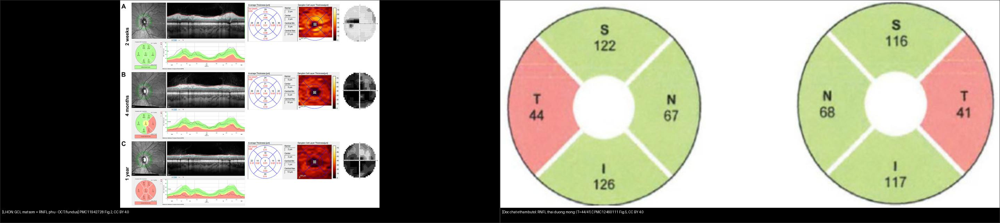
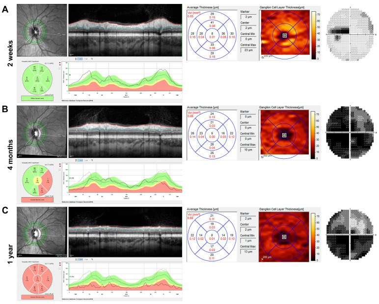
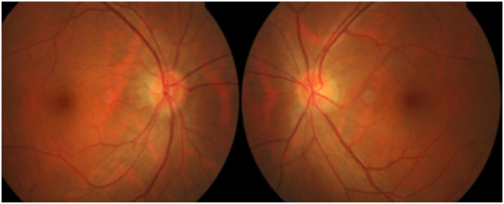
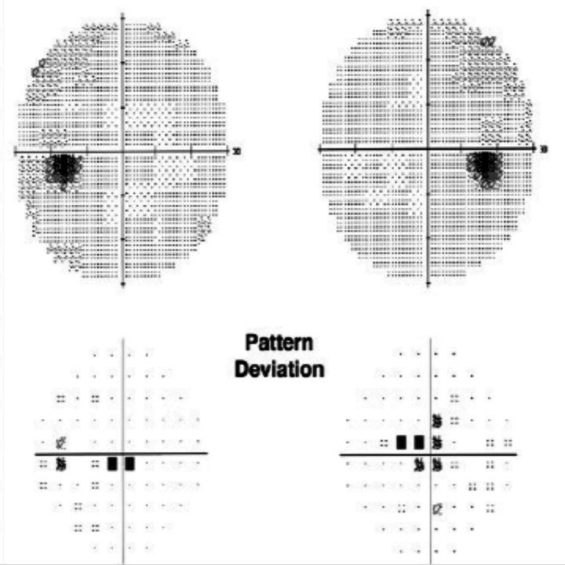
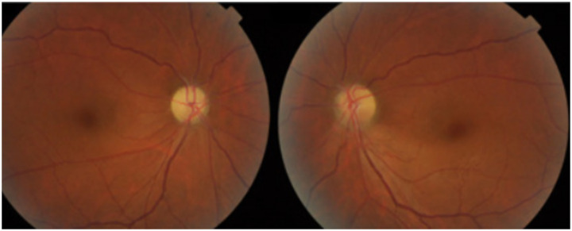
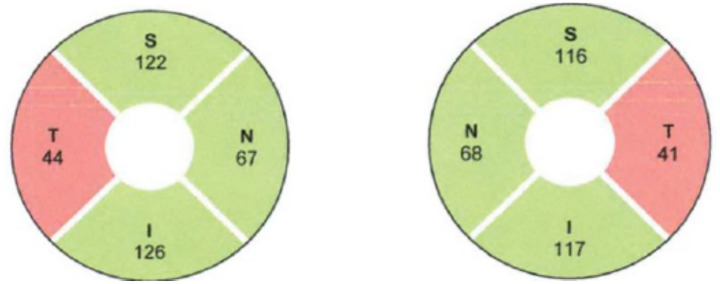
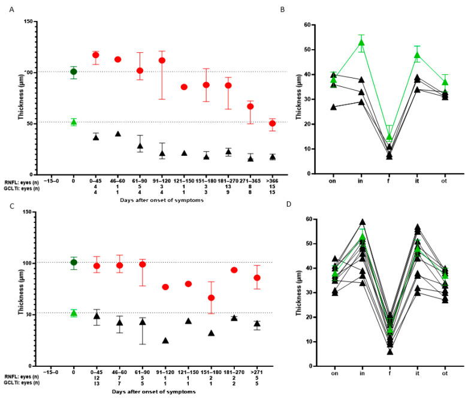

434 — Bệnh thần kinh thị do độc–chuyển hóa & LHON: tiếp cận teo thị 2 bên / Toxic–metabolic optic neuropathy & LHON
Tags: pattern:teo-thi vung:than-kinh-thi score:GCL protocol:OCT-thi-truong protocol:MRI-hoc-mat
Mức chắc chắn (certainty): tổng hợp y văn (literature synthesis) — nhóm tự biên từ 3 nghiên cứu mở (JCM 2025 CC BY 4.0 + Front Neurol 2025 CC BY 4.0 + JOII 2026 CC BY 4.0), chưa gắn ca nguyên văn đơn lẻ.
1. Tổng quan — vì sao sợi trục thị chết, và số nào nằm lòng
- Tế bào hạch võng mạc (retinal ganglion cell, RGC) là neuron có nhu cầu năng lượng rất cao: sợi trục không myelin ở phần trong nhãn cầu dài ~1 mm nhưng tiêu thụ ATP lớn để chạy bơm ion và vận chuyển sợi trục. Ty thể (mitochondria) là nhà máy ATP → chuỗi hô hấp hỏng → chết RGC. Vì thế teo thị 2 bên là bệnh của ty thể ở phần lớn ca di truyền và độc chất.
- LHON (Leber hereditary optic neuropathy): đột biến mtDNA phức hợp I (complex I) → giảm ATP + tăng gốc tự do; bó nhúi hoàng điểm (papillomacular bundle) — bó sợi mảnh, nhiều ty thể — chết trước → ám điểm trung tâm–manh điểm (cecocentral scotoma). Di truyền theo dòng mẹ, thâm nhập không hoàn toàn.
- Độc–chuyển hóa: ethambutol tạo chelate + độc ty thể (liều cao); methanol biến thành acid formic ức chế trực tiếp cytochrome oxidase (phức hợp IV) → toan chuyển hóa + mù nặng; thiếu B12/folate/thiamin/đồng làm tổn thương myelin + sợi trục (kèm tủy sau).
- TẠI SAO OCT hoàng điểm chốt hơn soi đáy mắt: GCL là thân tế bào; thân chết trước, sợi trục mất theo kiểu Waller về sau. Số từ nghiên cứu mở (JCM 2025, PMC11942728, 9 LHON vs 20 ON): RNFL phù nhiều hơn ở LHON trong 60 ngày đầu, GCLT giảm mạnh ngày 0–45 (sớm hơn RNFL), sau ngày 120 RNFL giảm liên tục và nặng ở LHON trong khi RNFL của viêm thị chững lại — đây là chốt phân biệt LHON vs viêm thị (ON).
- Số nằm lòng khác: LHON tần suất ~1/30.000–1/50.000, khởi phát đỉnh 15–35 tuổi (đa số 20–30), nam:nữ ≈ 4:1; 3 đột biến chính chiếm
90–95%: **m.11778G>A (70%, tiên lượng xấu nhất)**, m.14484T>C (phục hồi tốt nhất37–58%) và m.3460G>A. Ethambutol gây độc phụ thuộc liều, đặc biệt > 15 mg/kg/ngày, khởi phát **3–6 tháng**. B12 < 200 pg/mL** (kèm MMA/homocysteine tăng). Methanol độc khi **> 20 mg/dL.
2. Mẫu hình + chẩn đoán phân biệt theo vị trí (gamut)
- Câu hỏi lọc 1 — thời gian: cấp (giờ–ngày: ngộ độc methanol/ethylene glycol, thiếu máu thị) · bán cấp (tuần: LHON, độc chất, viêm, chèn ép) · mạn (tháng–năm: DOA, teo sau phù, do độc mạn).
- Câu hỏi lọc 2 — định khu theo thị trường: ám điểm trung tâm–manh điểm = tổn thương bó nhúi (LHON, độc–chuyển hóa, thiếu máu thị) · bán manh 2 thái dương = giao thoa/yên (u tuyến yên) · khuyết mũi 2 bên = tổn thương bắt chéo muộn · thu hẹp đồng tâm 2 bên = teo lan tỏa (bẩm sinh, teo sau phù kéo dài).
- Gamut teo thị 2 bên: di truyền (LHON, DOA/OPA1, Wolfram) · độc–chuyển hóa (ethambutol, isoniazid, linezolid, amiodarone, methanol, ethylene glycol, rượu–thuốc lá, thiếu B12/folate/thiamin/đồng) · viêm (xơ cứng rải rác — MS, NMOSD, MOGAD, MOG) · chèn ép (u tuyến yên, dày màng não, u giao thoa) · sau ứ nước (teo sau phù đĩa/IIH) · khác (bệnh thần kinh thị do thiếu máu–truyền máu, sau xạ trị, thâm nhiễm/ung thư màng não).
- Gợi nhớ độc–chuyển hóa "B–E–T–M": B12/folate/thiamin/đồng · Ethambutol · Tobacco–alcohol · Methanol/ethylene glycol. Ngộ độc xếp theo tổn thương bắt đối xứng thái dương (đĩa nhợt thái dương), LHON xếp theo bó nhúi.
3. Bảng so sánh phân biệt (ma trận đối chiếu)
| Thực thể (entity) | Hình ảnh điển hình | Chốt vào (rule-in) | Chốt loại (rule-out) | Gợi ý xác nhận |
|---|---|---|---|---|
| LHON | Giả phù đĩa sớm → nhợt; GCL mất sớm 0–45 ngày khi RNFL còn phù, RNFL giảm nặng sau 120 ngày; ám điểm trung tâm–manh điểm | Nam trẻ 15–35 + 2 bên không đau + thâm nhập dòng mẹ; GCL/RNFL lệch pha | Đau khi liếc + ngấm MRI + dịch tủy → viêm thị | mtDNA m.11778G>A / 14484T>C / 3460G>A |
| Độc–chuyển hóa (ethambutol, B12, rượu–thuốc lá) | Đĩa sung huyết sớm → nhợt thái dương; RNFL thái dương mỏng; ám điểm trung tâm; thị lực giảm từ từ 2 bên | Tiền sử thuốc/liều (ethambutol > 15 mg/kg/ngày) hoặc thiếu dinh dưỡng; tổn thương thái dương đối xứng | Không dùng thuốc/không thiếu; ngấm MRI → viêm | Ngưng thuốc; B12 < 200 pg/mL, MMA/homocysteine tăng |
| Viêm thị 2 bên (MS/NMOSD/MOGAD) | Ngấm cản quang + T2 sáng thần kinh thị, RNFL không phù bằng LHON; đau, RAPD, giảm màu sớm | Đau khi liếc + ngấm MRI + hồi phục từng đợt | Không đau, không ngấm, tiến triển không hồi phục → nghi LHON/độc | Kháng thể AQP4/MOG, MRI sọ–tủy |
| Chèn ép giao thoa | Bán manh 2 thái dương + teo dải băng (band atrophy) đĩa; giảm thị lực 2 bên tiến triển | Bán manh 2 thái dương + giảm thị lực 2 bên | Ám điểm trung tâm đơn thuần → không phải giao thoa | MRI yên/giao thoa có tiêm |
| DOA (OPA1) | RNFL thái dương mỏng lan, đĩa nhợt thái dương, tiến triển chậm từ nhỏ; di truyền trội | Tiền sử gia đình trội + khởi phát thời thơ ấu | Cấp/bán cấp → LHON/viêm/độc | Giải trình tự OPA1 |
| Teo sau ứ nước (IIH/post-papilledema) | Đĩa nhợt + RNFL mỏng sau giai đoạn phù, có triệu chứng tăng áp lực nội sọ | Tiền sử papilledema/IIH + triệu chứng ICP | Không có phù trước đó → nguyên nhân khác | MRI/MRV + áp lực mở (bài 433) |

Trái: LHON đa phương thức (đáy mắt + OCT + bản đồ GCL + thị trường) tại 2 tuần, 4 tháng, 1 năm — GCL mất khi RNFL còn phù (PMC11942728 Fig. 2, CC BY 4.0). Phải: RNFL bánh xe, ô thái dương (T) tụt còn 44 µm/41 µm ở bệnh nhân ngộ độc ethambutol (PMC12460111 Fig. 5, CC BY 4.0). Ảnh ghép letterbox.Quiz composite: che 2 nhãn, hỏi vì sao bên trái phải xét gen còn bên phải chỉ cần ngưng thuốc?
Bấm để hiện đáp án
- Trái = LHON — GCL mất sớm dù RNFL còn phù, 2 mắt, người trẻ → xét mtDNA (m.11778/14484/3460), tư vấn dòng mẹ.
- Phải = ngộ độc ethambutol — RNFL thái dương mỏng đối xứng → ngưng ethambutol, bổ sung vitamin; theo dõi OCT hồi phục.
- Chung: cả hai đều là teo thị bó nhúi 2 bên không đau — khác nhau ở tiền sử phơi nhiễm thuốc/đột biến ty thể, không ở đáy mắt.
Vì sao RNFL "phù" trong LHON mà thị lực lại mất — nghịch lý cần hiểu
- LHON khởi đầu bằng phù sợi trục (axoplasmic stasis) do năng lượng thiếu → soi đáy mắt thấy "giả phù đĩa" tưởng lành, nhưng GCL đã chết → thị lực mất trước khi đĩa nhợt.
- Vì vậy đừng vội gọi "viêm thị" hay "teo thị lành": nếu GCL mỏng hơn RNFL cho phép trong tuần đầu, nghĩ LHON.
- Cạm bẫy: RNFL phù + không ngấm MRI thường bị gán nhãn viêm; LHON hiếm khi ngấm — MRI không ngấm là gợi ý LHON, không phải loại bỏ.
4. Protocol chụp + hệ điểm chuẩn hóa (OCT/GCL)
- Khám nền: thị lực, thị giác màu (Ishihara/Farnsworth) (mua sắc đỏ–xanh sớm ở độc chất/LHON), thị trường tự động 24-2, phản xạ đồng tử (RAPD), soi đáy mắt.
- OCT (chốt): vòng RNFL quanh đĩa + GCL hoàng điểm (macular GCL/GCC) — đo µm, so bản đồ ETDRS; theo dõi GCL mỏng dần, không chỉ RNFL (bài 433/442).
- MRI: sọ + hốc mắt, T1 fat-sat sau tiêm + T2 fat-sat — loại u/chèn ép/viêm; ngấm = viêm, không ngấm = nghi LHON/độc.
- Xét nghiệm: B12, folate, homocysteine/MMA, đồng, kẽm, TSH, đường huyết, điện di Hb, ANA, AQP4/MOG, HIV, VDRL/TPHA; độc chất máu (methanol/ethylene glycol) khi cấp; mtDNA khi nghi LHON.
- Ngưỡng & xử trí: ethambutol ngưng ngay khi nghi (hồi phục tính bằng tuần–tháng); methanol → fomepizol/ethanol + lọc máu (không chờ xác nhận); LHON → idebenone (chứng cứ hạn chế) + tránh rượu/thuốc lá + tầm soát người thân dòng mẹ; thiếu B12 → bổ sung.
- Theo dõi: OCT RNFL/GCL + thị trường mỗi 1–3 tháng giai đoạn hoạt động; ghi µm và so bản đồ để phát hiện tiến triển.
flowchart TD
A[Teo thi 2 ben] --> B{Thoi gian tien trien}
B -->|Cap - gio| C[Nghi doc: methanol/ethylene glycol - kiem doc chat + loc mau]
B -->|Ban cap - tuan| D{Dau khi liec + ngam MRI?}
D -->|Co| E[Viem TK thi - MS/NMOSD/MOGAD]
D -->|Khong dau, khong ngam| F{OCT: GCL mat som khi RNFL con phu?}
F -->|Co| G[Nghi LHON - xet mtDNA 11778/14484/3460]
F -->|Khong| H[Xet nghiem B12/folate/thuoc - nghi doc-chuyen hoa]
B -->|Man - thang nam| I{Ban manh 2 thai duong?}
I -->|Co| J[Chen ep giao thoa - MRI yen/giao thoa]
I -->|Khong| K[DOA OPA1 / teo sau phu / doc man]
5. Biến thể bình thường và cạm bẫy
- RNFL mỏng theo tuổi: giảm sinh lý ~0,2 µm/năm — luôn so bản đồ theo tuổi (normative database), đừng gọi teo bệnh lý khi chỉ lệch nhẹ.
- Đĩa nhỏ crowded gây "giả phù" ở người viễn thị — phân biệt với phù thật bằng OCT + tự phát sáng (bài 433), tránh chọc dịch oan.
- Mất đồng tử hơi giãn (RAPD) âm tính không loại được bệnh 2 bên đối xứng — vì 2 mắt tổn thương ngang nhau, RAPD có thể âm.
- MRI bình thường không loại được LHON/độc chất — chẩn đoán dựa OCT + bệnh sử + gen, không dựa MRI âm.
- "Teo thị do tuổi" hay "teo thị vô căn": nhãn này dễ bỏ sót ethambutol/B12/LHON — luôn hỏi thuốc (ethambutol, linezolid, amiodarone) và dinh dưỡng.
- Sàn GCL (floor effect): GCL giảm tới một ngưỡng rồi chững — theo dõi tiếp bằng RNFL/thị trường để tránh tưởng "ổn định".
6. Tự lượng giá — Blind Quiz
Ca 1 — Nam 25 tuổi, mất thị lực 2 bên không đau, tiến triển trong 2 tuần, ám điểm trung tâm. OCT dưới đây:

- Hỏi: dấu hiệu nào mất SỚM (GCL hay RNFL)? Vì sao? Chẩn đoán + xét nghiệm chốt?
Bấm để hiện đáp án (findings + chẩn đoán)
- Dấu hiệu (findings): bản đồ GCL hoàng điểm mất rõ ở 2 tuần trong khi RNFL còn phù (đĩa chưa nhợt hẳn); qua 4 tháng → 1 năm RNFL mỏng dần nặng; thị trường mất trung tâm–manh điểm.
- Chẩn đoán (diagnosis): LHON (m.11778G→A) — vì nam trẻ, 2 bên không đau, GCL chết sớm hơn RNFL (nghịch lý "phù nhưng đã mất").
- Xét nghiệm chốt: mtDNA (11778/14484/3460) + tư vấn di truyền dòng mẹ + tầm soát người thân.
- Nguồn ảnh: JCM 2025 (PMC11942728) Fig. 2, CC BY 4.0.
Ca 2 — Bệnh nhân lao đang dùng ethambutol 3 tháng, thị lực giảm 2 bên. Ảnh + thị trường:


- Hỏi: đĩa thị ra sao? Thị trường mất kiểu gì? Xử trí ngay là gì?
Bấm để hiện đáp án (findings + chẩn đoán)
- Dấu hiệu (findings): đĩa thị sung huyết (hyperemia) 2 bên; thị trường mất trung tâm 2 bên (central scotoma) trên Humphrey.
- Chẩn đoán (diagnosis): ngộ độc thị thần kinh do ethambutol — vì tiền sử thuốc + tổn thương 2 bên đối xứng bó nhúi; giai đoạn sớm đĩa sung huyết, về sau nhợt thái dương.
- Xử trí: ngưng ethambutol ngay (thay bằng phác đồ an toàn), xét B12/folate; theo dõi OCT RNFL/GCL — hồi phục thường trong vài tuần–vài tháng.
- Nguồn ảnh: Front Neurol 2025 (PMC12460111) Fig. 1 & 3, CC BY 4.0 (Fig. do Sudhakar P et al.).
Ca 3 — Hai bệnh nhân teo thị 2 bên tuần tự: (B) đĩa nhợt thái dương + (A) RNFL thái dương mỏng. Chẩn đoán?


- Hỏi: mẫu hình teo? Vì sao ô thái dương (T) lại giảm chọn lọc? 3 chẩn đoán phân biệt?
Bấm để hiện đáp án (findings + chẩn đoán)
- Dấu hiệu (findings): nhợt nhạt đĩa ưu thế thái dương ở thì muộn; RNFL bánh xe cho thấy ô thái dương (T) 44 µm và 41 µm tụt chọn lọc so với mũi (N 67/68 µm) và trên/dưới (~117–126 µm).
- Chẩn đoán (diagnosis): teo thị bó nhúi thái dương do ngộ độc/nutritional (ethambutol) — vì bó nhúi (thái dương) chứa sợi mảnh nhạy độc → mất trước.
- 3 phân biệt: LHON (thêm OCT GCL + gen mtDNA), DOA/OPA1 (tiền sử gia đình trội, khởi phát nhỏ), teo sau phù đĩa (hỏi tiền sử phù/IIH).
- Nguồn ảnh: Front Neurol 2025 (PMC12460111) Fig. 2 & 5, CC BY 4.0.
Ca 4 — Ghép OCT: bên trái là LHON, bên phải là ngộ độc. Bên nào cần xét gen?

Bấm để hiện đáp án (findings + chẩn đoán)
- Trái (LHON): GCL mất sớm khi RNFL còn phù, diễn tiến 2 tuần→1 năm; biểu đồ theo ngày cho thấy RNFL giảm nặng tiếp diễn sau 120 ngày → xét mtDNA + tư vấn dòng mẹ.
- Phải (ngộ độc ethambutol): RNFL thái dương mỏng đối xứng → ngưng thuốc, bổ sung vitamin, theo dõi.
- Chốt: cùng mẫu hình "teo thị bó nhúi 2 bên", phân biệt nhờ GCL/RNFL lệch pha + tiền sử phơi nhiễm/gen.
- Nguồn ảnh: PMC11942728 Fig. 2–3 + PMC12460111 Fig. 5, CC BY 4.0.
Bài liên quan chéo
- 400 – Tổng quan Mắt
- 430 – Đường thị giác (viêm thị, NAION, định khu thị trường)
- 431 – U TK thị (chèn ép thần kinh thị)
- 432 – Vùng yên (bán manh 2 thái dương — u tuyến yên)
- 433 – Phù đĩa thị vs drusen (phù thật vs giả phù; IIH)
- 439 – Teo thị di truyền (DOA/OPA1 & Wolfram) (teo thị 2 bên do gene nhân: DOA/Wolfram)
- 442 – Glaucoma OCT (RNFL/GCL mỏng — so cơ chế)
- 451 – Bệnh hệ thống ở mắt (thiếu B12, rượu–thuốc lá)
Ảnh
434_lhon_Fundus-OCT_PMC11942728-Fig2-CCBY.jpg,434_lhon-tien-trien_OCT_PMC11942728-Fig3-CCBY.jpg— JCM 2025 (PMCID: PMC11942728), CC BY 4.0.434_ethambutol-sung-huyet_Fundus_PMC12460111-Fig1-CCBY.jpg,434_ethambutol-nhat_Fundus_PMC12460111-Fig2-CCBY.jpg,434_ethambutol-am-diem_TVF_PMC12460111-Fig3-CCBY.jpg,434_ethambutol-mong-thai-duong_OCT_PMC12460111-Fig5-CCBY.jpg,composite_teo-thi_LHON-vs-doc-chat.jpg— Front Neurol 2025 (PMCID: PMC12460111), CC BY 4.0.- Chi tiết giấy phép từng ảnh trong
images/CREDITS.md. AuntMinnie: chỉ dẫn link, không tải.
Không dùng để chẩn đoán độc lập khi chưa có người hướng dẫn.